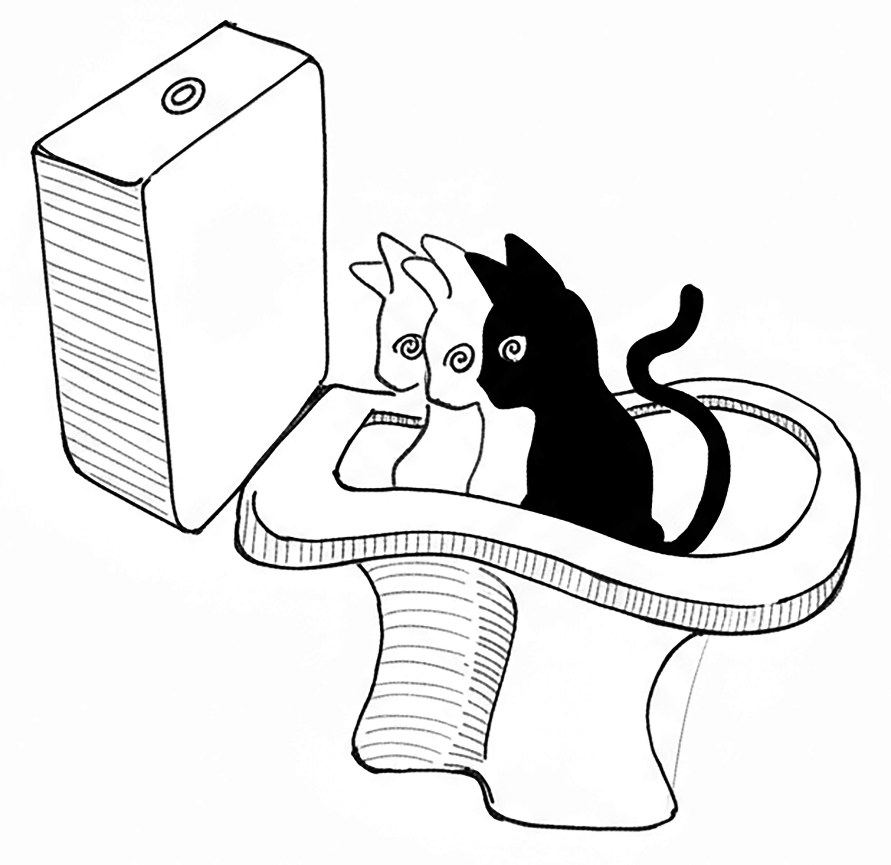
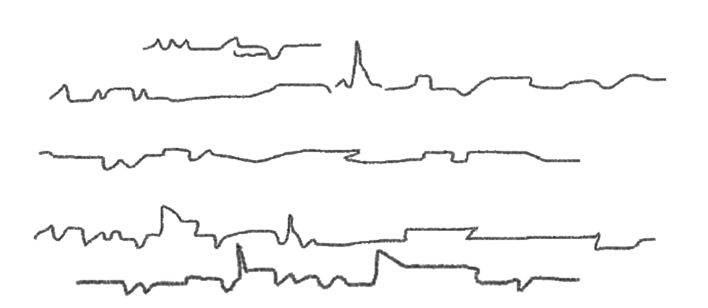

Os dias terráqueos se passavam dentro das expectativas para a missão. Rita, a cada dia, se sentia mais segura em seu ofício de professora.
Meu sinistro amigo Anagonno entrava e saía da minha mente de acordo com a sua conveniência. Às vezes, eu o comparava com um daqueles alunos dispersos do "fundão".
De todas as estranhezas que tenho presenciado entre os humanos, a que mais me deixa confuso é a relação peculiar que mantêm com o tempo — uma verdadeira obsessão. Estão sempre obcecados pelo futuro e usam o passado, quase sempre, para nutrir sentimentos de arrependimento: seja por algo que não saiu como planejado, seja por alguma ação que acreditam ter sido executada de maneira impensada.
O presente deles se assemelha a uma frágil ponte pênsil sobre um precipício: um lugar a ser temido enquanto caminham, às cegas, rumo a um futuro desconhecido.
No meu mundo, só existe o presente — um eterno presente que vivemos intensamente. Sabemos que o futuro é apenas um embrião que logo dará origem a um novo presente, para ser vivido em toda a sua plenitude.
Por ainda não fazer parte de nossas consciências, preferimos manter o futuro protegido em alguma parte do presente.
Algo semelhante acontece com o nosso passado: por reunir todos os presentes já vividos, não o deixamos para trás — implantamo-lo sempre à frente de nossas ações. Todas as vezes que pensamos, fazemos ou dizemos algo, olhamos para ele. É como um olho que olha retrospectivamente para a frente.
— Belíssimas reflexões, Sr. Koz! — cumprimentou-me Anagonno.
— Estranho... não percebi você entrando em minha mente — disse a ele.
— Talvez eu tenha entrado pela porta dos fundos. Kkk.
— Você tem um senso de humor peculiar, Sr. Anagonno.
p. 40— Pois é... às vezes, não consigo me controlar. Mas deixemos meu humor de lado. Quero que saiba que, no meu mundo subaquático, nos relacionamos com o tempo exatamente como vocês, em seu mundo, amigo Koz.
— Interessante. Um dia desses, gostaria de conhecer o seu mundo, Sr. Anagonno.
— Também tenho curiosidade sobre o seu, Sr. Koz. Espere aí... e se o seu mundo não existir?
— Como assim?! — perguntei, confuso.
— Isso mesmo! E se você for apenas uma projeção da mente de Rita? Uma mera criação de seu psiquismo, involuntariamente desenvolvida para atenuar algum trauma sofrido? Neste caso, Sr. Koz, você, seu mundo e sua missão... talvez nem mesmo existam!
— Me desculpe a franqueza, Sr. Anagonno, mas penso que seu senso de humor está começando a interferir em nossa relação. Não acha?
— Queira me desculpar, mas ele me ajuda a suportar as trivialidades do universo humano.
— Nesse caso, Sr. Anagonno, me vejo obrigado a devolver a pergunta que me fez: e se o seu mundo subaquático for apenas uma criação da mente estressada de Rita? Talvez você seja uma versão nordestina do Aquaman — provoquei, com ironia.
— Parabéns, Koz! Percebo que começou a desenvolver seu próprio senso de humor. Pois fique sabendo que o meu mundo é mais real do que imagina.
— E o que acha de me provar se você de fato existe ou se é apenas uma projeção mental de Rita? — desafiei-o.
— Tudo bem. Mas me dê um tempo... deixe-me pensar em uma maneira prática de provar a minha existência. Já sei! Está vendo o gato da Rita, o “Leozinho”?
p. 41— Sim. O que tem ele?
— Todos sabem que gatos não gostam de água, não é mesmo? Então, entrarei na mente do bichano e farei com que ele entre no vaso sanitário e se divirta como uma criança em uma festa de aniversário. O que acha, Sr. Koz?
— Julgando pelo comportamento usual desse gato, sou obrigado a aceitar o seu desafio.
Imediatamente, o gato saiu de cima de sua almofada, atravessou a sala e entrou no lavabo. Percebendo que a tampa do vaso estava aberta, lançou-se dentro dele, realizando sucessivas cambalhotas e espalhando água por todo o recinto. Impressionante! O gato mergulhava a cabeça no fundo do vaso como se quisesse descer pela tubulação.

— Olhe só como ele está feliz! Esse gato até me faz recordar da minha infância. E agora, Sr. Koz, satisfeito? Ou quer que eu faça o gato morrer engasgado, engolindo a própria cauda? Agora é a sua vez de provar que existe — provocou-me Anagonno.
— Eu poderia pedir a Rita que levitasse. Para uma humana como ela, tal façanha só pode ser alcançada quando se atinge estados de consciência alterados ou mesmo um nível muito elevado de desenvolvimento espiritual, a ponto de transcender as restrições de seu corpo físico. Contudo, amigo anfíbio, nesta missão, infelizmente, não estou autorizado a interferir nas ações dos humanos.
— Eu sabia! Você não existe concretamente. É só uma ilusão mental de Rita ou, quem sabe, uma crise da própria consciência em relação à sua ciência ambiental ineficaz.
— Já sei como provar a minha existência sem interferir nas decisões de Rita!
— Ótimo! Vá em frente — disse Anagonno, incrédulo.
— O plano é o seguinte: você vai fazer com que o gato dê boas e altas miadas dentro do vaso. Assim que Rita ouvir e for ao encontro do animal para retirá-lo de lá, eu farei uma tradução, em tempo real, para o meu idioma. Tudo o que ela disser ao gato você ouvirá — na voz dela — só que na língua falada em meu mundo. Dessa maneira, conseguirei provar a você a minha existência sem alterar o estado de consciência da professora. O que acha da minha ideia?
p. 42— Fechado — concordou Anagonno.
Instantaneamente, o gato começou a esgoelar miados de dentro do vaso. Rita, então, saltou da cama e correu ao encontro do bichano esbravejando:

— Satisfeito, Sr. Anagonno?
— Confesso que estava esperando uma performance tipo “de outro mundo”, entende? Mas você acabou me convencendo de sua existência.
— Parceiros novamente?
— Sim.